Квартира с эркерами · 13 помещений
Листов: 121 · блокеров: 0 · замечаний: 35 · проверка
01-decorator-cover.svg — Титульный лист (decorator)
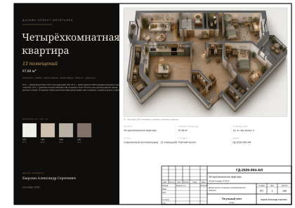
02-draftsman-general.svg — Общие данные (draftsman)
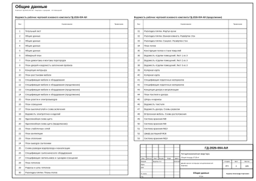
03-draftsman-general-2.svg — Общие данные (draftsman)
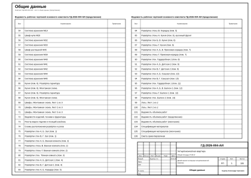
04-draftsman-general-3.svg — Общие данные (draftsman)
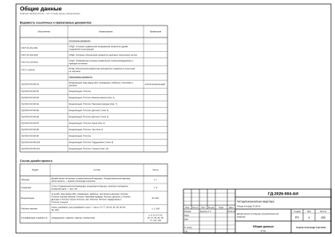
05-draftsman-general-4.svg — Общие данные (draftsman)
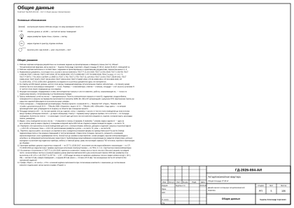
06-foreman-open-issues.svg — Открытые вопросы, принятые допущения и конфликты. Лист 1 из 6 (foreman)

07-foreman-open-issues-2.svg — Открытые вопросы, принятые допущения и конфликты. Лист 2 из 6 (foreman)
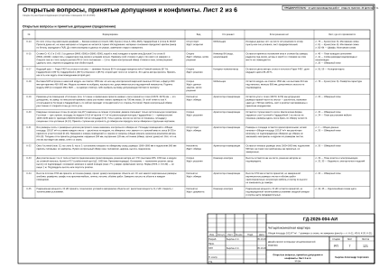
08-foreman-open-issues-3.svg — Открытые вопросы, принятые допущения и конфликты. Лист 3 из 6 (foreman)
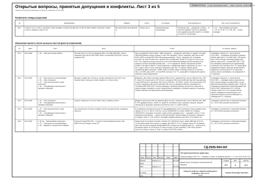
09-foreman-open-issues-4.svg — Открытые вопросы, принятые допущения и конфликты. Лист 4 из 6 (foreman)
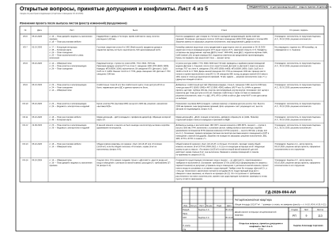
10-foreman-open-issues-5.svg — Открытые вопросы, принятые допущения и конфликты. Лист 5 из 6 (foreman)
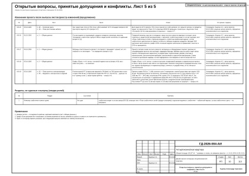
11-foreman-open-issues-6.svg — Открытые вопросы, принятые допущения и конфликты. Лист 6 из 6 (foreman)
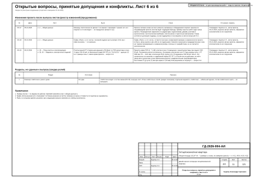
12-foreman-survey-task.svg — Задание на контрольный обмер и обследование. Лист 1 из 5 (foreman)

13-foreman-survey-task-2.svg — Задание на контрольный обмер и обследование. Лист 2 из 5 (foreman)
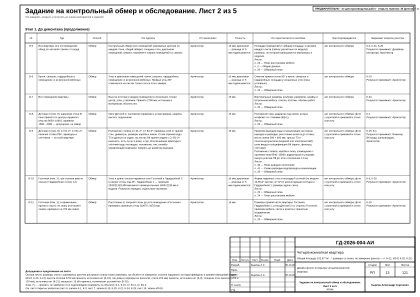
14-foreman-survey-task-3.svg — Задание на контрольный обмер и обследование. Лист 3 из 5 (foreman)
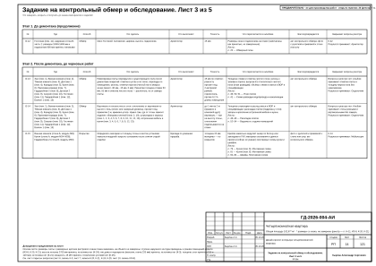
15-foreman-survey-task-4.svg — Задание на контрольный обмер и обследование. Лист 4 из 5 (foreman)
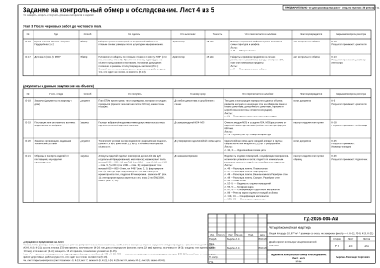
16-foreman-survey-task-5.svg — Задание на контрольный обмер и обследование. Лист 5 из 5 (foreman)
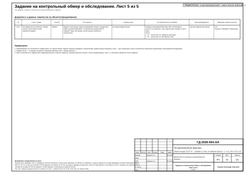
17-foreman-procurement.svg — График закупок и работ. Лист 1 из 3 (foreman)
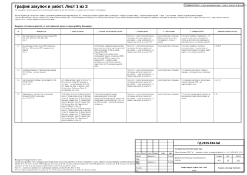
18-foreman-procurement-2.svg — График закупок и работ. Лист 2 из 3 (foreman)
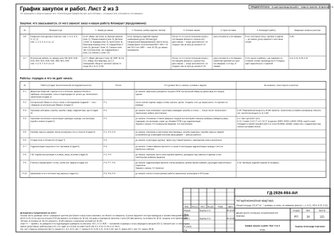
19-foreman-procurement-3.svg — График закупок и работ. Лист 3 из 3 (foreman)
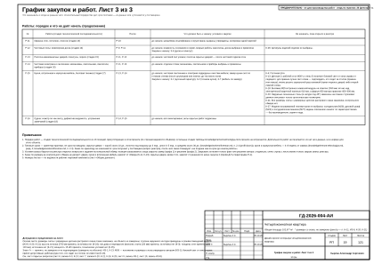
20-architect-obmer.svg — Обмерный план (architect)
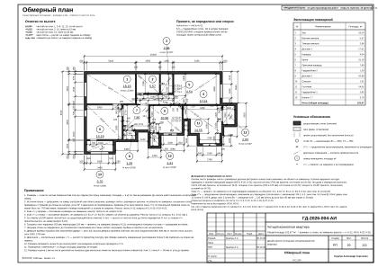
21-architect-demolition.svg — План демонтажа и монтажа перегородок (architect)
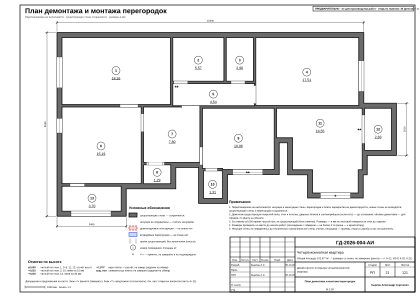
22-architect-doors.svg — План дверей и ведомость заполнения проёмов (architect)
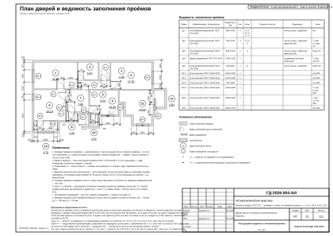
23-interior-designer-concept.svg — Концепция интерьера (interior-designer)
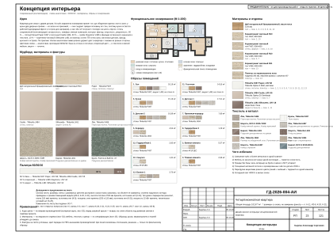
24-interior-designer-furniture.svg — План расстановки мебели (interior-designer)
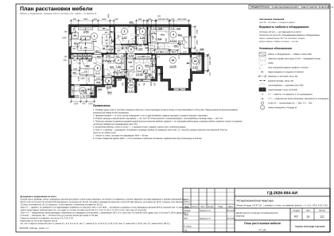
25-interior-designer-spec.svg — Спецификация мебели и оборудования (interior-designer)
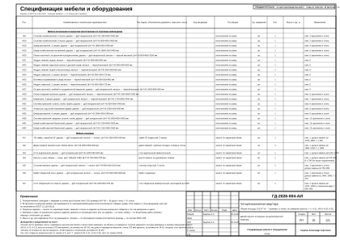
26-interior-designer-spec-2.svg — Спецификация мебели и оборудования (продолжение) (interior-designer)
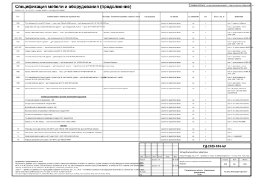
27-interior-designer-spec-3.svg — Спецификация мебели и оборудования (продолжение) (interior-designer)
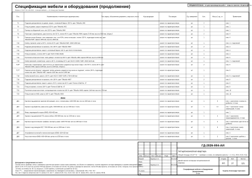
28-interior-designer-spec-4.svg — Спецификация мебели и оборудования (продолжение) (interior-designer)
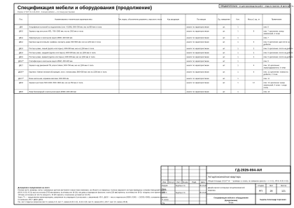
29-electrical-engineer-sockets.svg — План розеток и электровыводов (electrical-engineer)
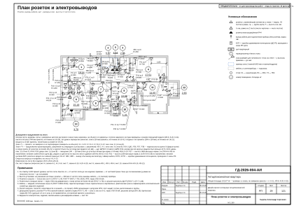
30-electrical-engineer-lighting.svg — План освещения (electrical-engineer)
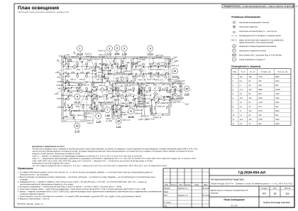
31-electrical-engineer-switches.svg — План выключателей и схема включения (electrical-engineer)
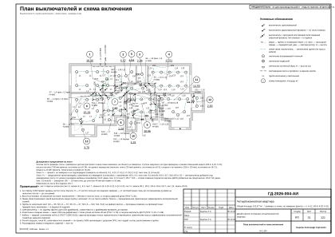
32-electrical-engineer-schedule.svg — Ведомость электроточек и изделий (electrical-engineer)
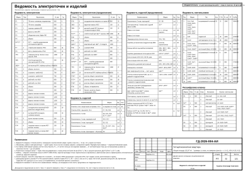
33-electrical-engineer-schedule-2.svg — Ведомость электроточек и изделий (продолжение) (electrical-engineer)
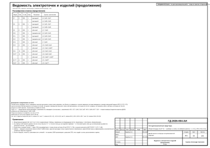
34-electrical-engineer-panel.svg — Однолинейная схема щита (electrical-engineer)
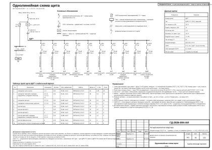
35-electrical-engineer-panel-2.svg — Однолинейная схема щита (продолжение) (electrical-engineer)
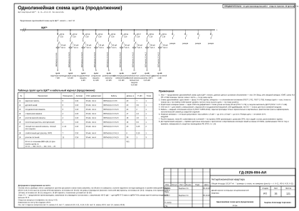
36-electrical-engineer-routing.svg — План принципиальных трасс (electrical-engineer)
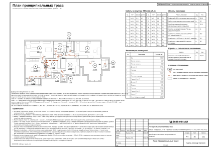
37-electrical-engineer-low-current.svg — План слаботочных сетей (electrical-engineer)
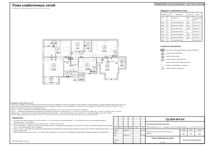
38-hvac-engineer-ventilation.svg — План вентиляции (hvac-engineer)
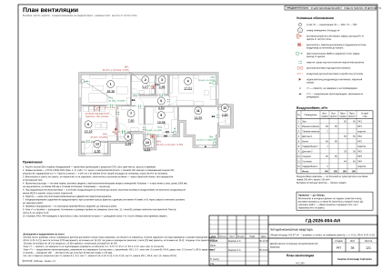
39-hvac-engineer-heating.svg — План отопления (hvac-engineer)
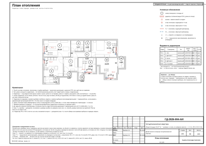
40-plumbing-engineer-vyvody.svg — План выводов сантехники (plumbing-engineer)
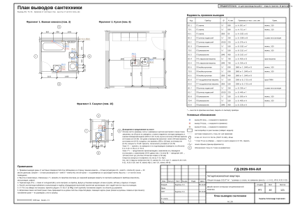
41-plumbing-engineer-razvodka.svg — Схема разводки водопровода и канализации (plumbing-engineer)
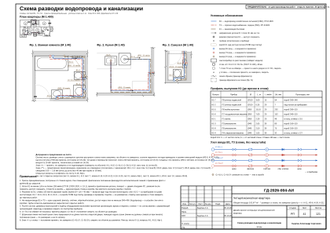
42-plumbing-engineer-spec-equipment.svg — Спецификация сантехнического оборудования (plumbing-engineer)
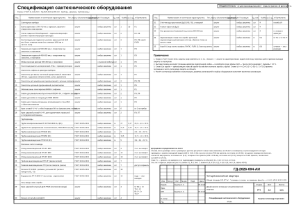
43-lighting-designer-lighting-spec.svg — Спецификация светильников и сценарии освещения (lighting-designer)
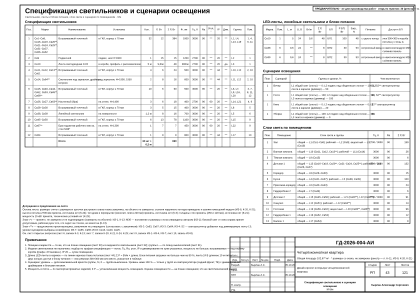
44-drywall-installer-ceiling.svg — План потолков (drywall-installer)
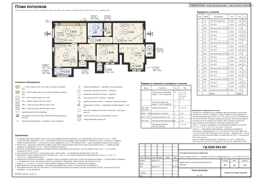
45-drywall-installer-ceiling-sections.svg — Разрезы и узлы потолков (drywall-installer)
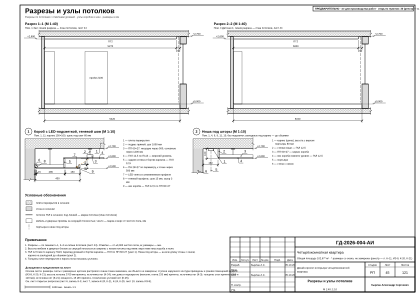
46-tiler-tile-floors.svg — Раскладка плитки. Планы полов (tiler)
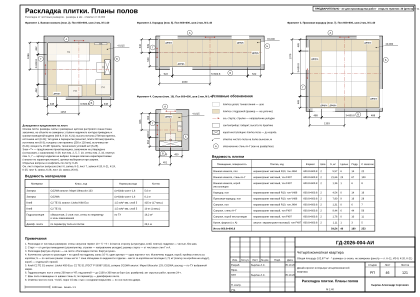
47-tiler-tile-extra.svg — Раскладка плитки. Фартук кухни (tiler)
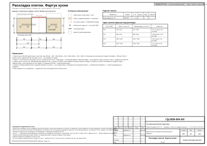
48-tiler-tile-walls-r2.svg — Раскладка плитки. Ванная комната. Развёртки стен (tiler)
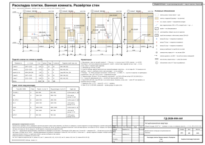
49-tiler-tile-walls-r10.svg — Раскладка плитки. Санузел. Развёртки стен (tiler)
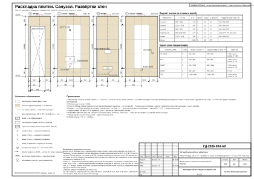
50-finisher-floors.svg — План полов (finisher)
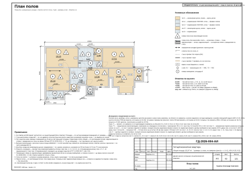
51-finisher-floor-tables.svg — Конструкции полов и стыки покрытий (finisher)
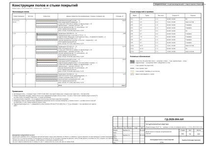
52-finisher-finish-schedule.svg — Ведомость отделки помещений. Лист 1 из 3 (finisher)
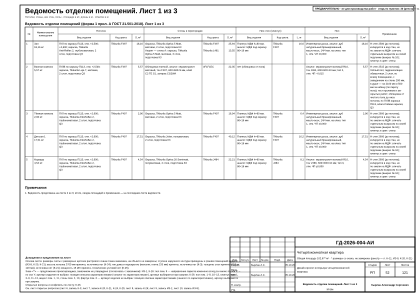
53-finisher-finish-schedule-2.svg — Ведомость отделки помещений. Лист 2 из 3 (finisher)
54-finisher-finish-schedule-3.svg — Ведомость отделки помещений. Лист 3 из 3 (finisher)
55-colorist-color-card.svg — Колерная карта (colorist)
56-colorist-color-card-2.svg — Колерная карта (colorist)
57-colorist-materials-spec.svg — Спецификация отделочных материалов (colorist)
58-colorist-materials-spec-2.svg — Спецификация отделочных материалов (colorist)
59-decorator-decor-concept.svg — Концепция декора и визуализации (decorator)
60-decorator-decor-plan.svg — План текстиля и декора (decorator)
61-decorator-curtains.svg — Шторы и карнизы (decorator)
62-decorator-textile-schedule.svg — Ведомость текстиля (decorator)
63-decorator-decor-schedule.svg — Ведомость декора. Схемы развески (decorator)
64-furniture-maker-furn-plan.svg — Встроенная мебель. Схема расположения (furniture-maker)
65-furniture-maker-furn-m8.svg — Система хранения М8 (furniture-maker)
66-furniture-maker-furn-m9.svg — Система хранения М9 (furniture-maker)
67-furniture-maker-furn-m10.svg — Система хранения М10 (furniture-maker)
68-furniture-maker-furn-m16.svg — Шкаф распашной М16 (furniture-maker)
69-furniture-maker-furn-m18.svg — Система хранения М18 (furniture-maker)
70-furniture-maker-furn-m19.svg — Система хранения М19 (furniture-maker)
71-furniture-maker-furn-m29.svg — Шкаф-купе М29 (furniture-maker)
72-furniture-maker-furn-m32.svg — Система хранения М32 (furniture-maker)
73-furniture-maker-furn-m33.svg — Система хранения М33 (furniture-maker)
74-furniture-maker-furn-m35.svg — Шкаф распашной М35 (furniture-maker)
75-furniture-maker-furn-m39.svg — Система хранения М39 (furniture-maker)
76-furniture-maker-furn-m41.svg — Система хранения М41 (furniture-maker)
77-furniture-maker-furn-m42.svg — Система хранения М42 (furniture-maker)
78-furniture-maker-furn-kitchen-6a.svg — Кухня (пом. 6). Развёртка гарнитура (furniture-maker)
79-furniture-maker-furn-kitchen-6a-mount.svg — Кухня (пом. 6). Монтажная схема (furniture-maker)
80-furniture-maker-furn-kitchen-6c.svg — Кухня (пом. 6). Развёртка гарнитура (furniture-maker)
81-furniture-maker-furn-kitchen-6c-mount.svg — Кухня (пом. 6). Монтажная схема (furniture-maker)
82-furniture-maker-furn-mount.svg — Шкафы. Монтажная схема. Лист 1 из 3 (furniture-maker)
83-furniture-maker-furn-mount-2.svg — Шкафы. Монтажная схема. Лист 2 из 3 (furniture-maker)
84-furniture-maker-furn-mount-3.svg — Шкафы. Монтажная схема. Лист 3 из 3 (furniture-maker)
85-furniture-maker-furn-schedule.svg — Ведомости изделий, техники и фурнитуры (furniture-maker)
86-draftsman-registers.svg — Реестр марок отделки и позиций альбома (draftsman)
87-draftsman-elev-key.svg — Схема расположения развёрток и узлов (draftsman)
88-draftsman-elev-r1-1.svg — Развёртки стен А, Б. Зал (пом. 1) (draftsman)
89-draftsman-elev-r1-2.svg — Развёртки стен В, Г. Зал (пом. 1) (draftsman)
90-draftsman-elev-r2-1.svg — Развёртка стены А. Ванная комната (пом. 2) (draftsman)
91-draftsman-elev-r2-2.svg — Развёртка стены Б. Ванная комната (пом. 2) (draftsman)
92-draftsman-elev-r2-3.svg — Развёртка стены В. Ванная комната (пом. 2) (draftsman)
93-draftsman-elev-r2-4.svg — Развёртка стены Г. Ванная комната (пом. 2) (draftsman)
94-draftsman-elev-r3.svg — Развёртки стен. Тёмная комната (пом. 3) (draftsman)
95-draftsman-elev-r4-1.svg — Развёртки стен А, Б. Детская 1 (пом. 4) (draftsman)
96-draftsman-elev-r4-2.svg — Развёртки стен В, Г. Детская 1 (пом. 4) (draftsman)
97-draftsman-elev-r5-1.svg — Развёртки стен А, Б. Коридор (пом. 5) (draftsman)
98-draftsman-elev-r5-2.svg — Развёртка стены В. Коридор (пом. 5) (draftsman)
99-draftsman-elev-r6-1.svg — Развёртка стены А. Кухня (пом. 6), кухонный фронт (draftsman)
100-draftsman-elev-r6-2.svg — Развёртки стен Б, В. Кухня (пом. 6) (draftsman)
101-draftsman-elev-r6-3.svg — Развёртка стены Г. Кухня (пом. 6) (draftsman)
102-draftsman-elev-r7-1.svg — Развёртки стен А, Б, В. Прихожая-коридор (пом. 7) (draftsman)
103-draftsman-elev-r7-2.svg — Развёртка стены Г. Прихожая-коридор (пом. 7) (draftsman)
104-draftsman-elev-r8.svg — Развёртки стен. Гардеробная 2 (пом. 8) (draftsman)
105-draftsman-elev-r9-1.svg — Развёртки стен А, Б. Детская 2 (пом. 9) (draftsman)
106-draftsman-elev-r9-2.svg — Развёртки стен В, Г. Детская 2 (пом. 9) (draftsman)
107-draftsman-elev-r10-1.svg — Развёртки стен А, Б. Санузел (пом. 10) (draftsman)
108-draftsman-elev-r10-2.svg — Развёртки стен В, Г. Санузел (пом. 10) (draftsman)
109-draftsman-elev-r11-1.svg — Развёртки стен А, Б. Гостиная (пом. 11) (draftsman)
110-draftsman-elev-r11-2.svg — Развёртки стен В, Г. Гостиная (пом. 11) (draftsman)
111-draftsman-elev-r12.svg — Развёртки стен. Гардеробная 1 (пом. 12) (draftsman)
112-draftsman-elev-r13-1.svg — Развёртки стен А, Б, В. Балкон 1 (пом. 13) (draftsman)
113-draftsman-elev-r13-2.svg — Развёртка стены Г. Балкон 1 (пом. 13) (draftsman)
114-draftsman-nodes.svg — Узлы (draftsman)
115-estimator-boq.svg — Ведомость объёмов работ (estimator)
116-estimator-boq-2.svg — Ведомость объёмов работ (продолжение) (estimator)
117-estimator-boq-3.svg — Ведомость объёмов работ (окончание) (estimator)
118-estimator-spec.svg — Спецификация материалов (estimator)
119-estimator-spec-2.svg — Спецификация материалов (окончание) (estimator)
120-estimator-estimate.svg — Смета ориентировочная (estimator)
121-estimator-estimate-2.svg — Смета ориентировочная (окончание) (estimator)